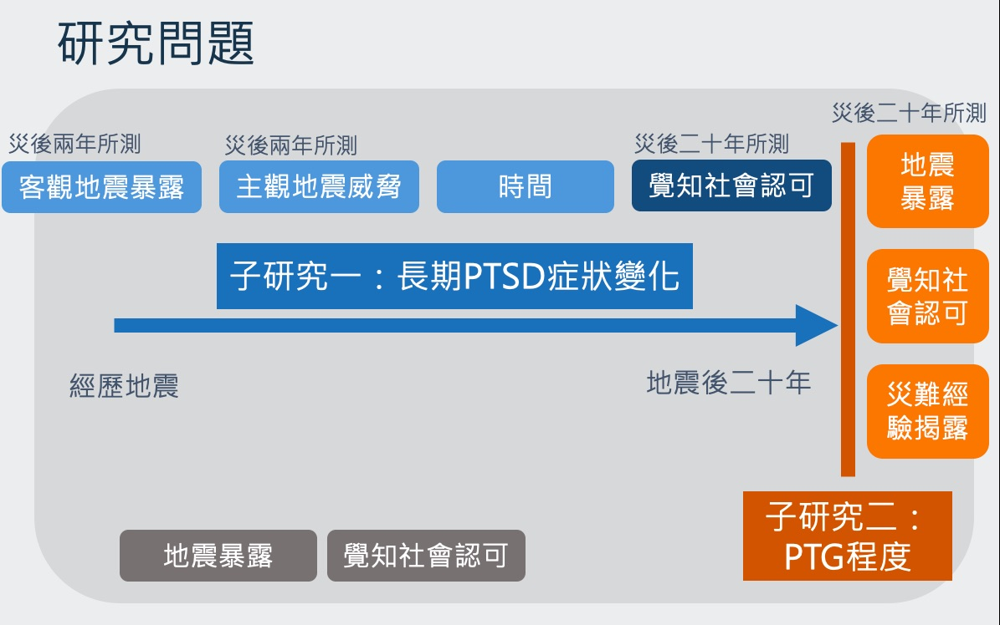
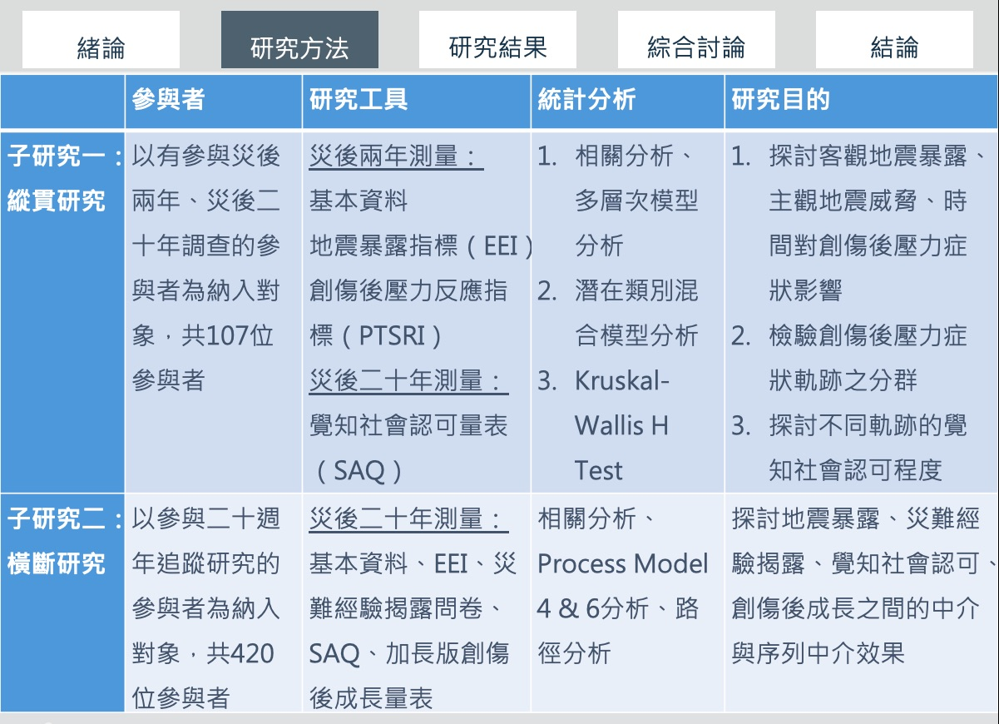
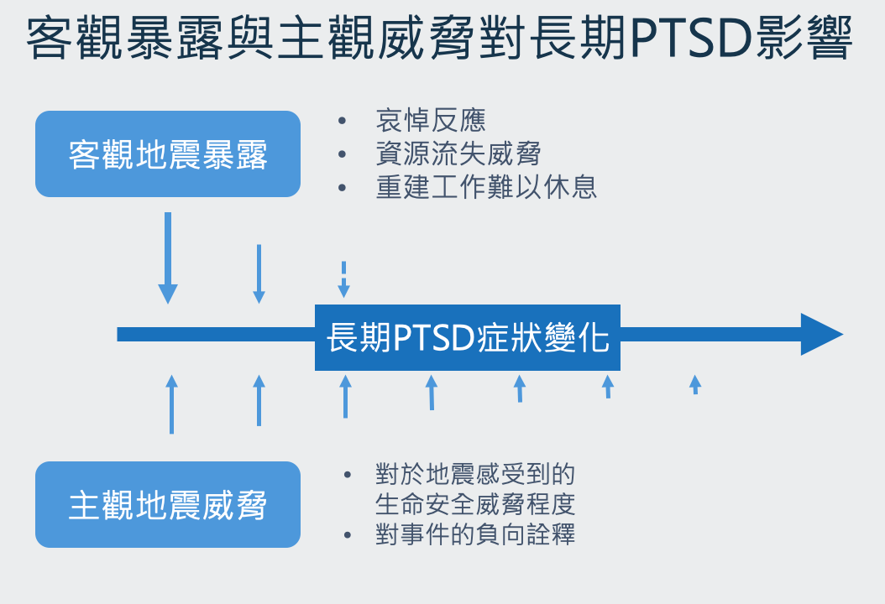
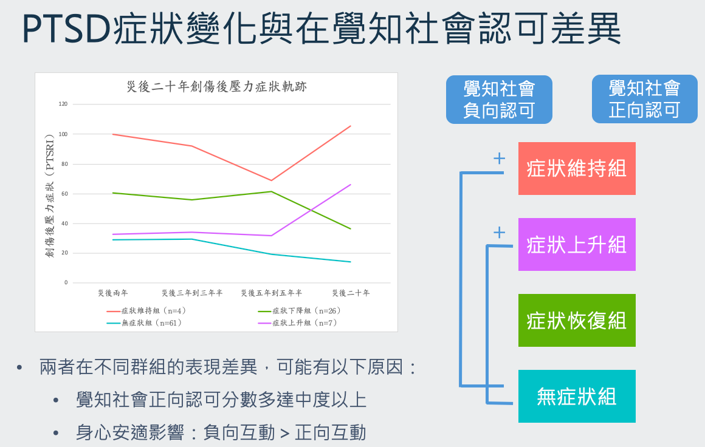
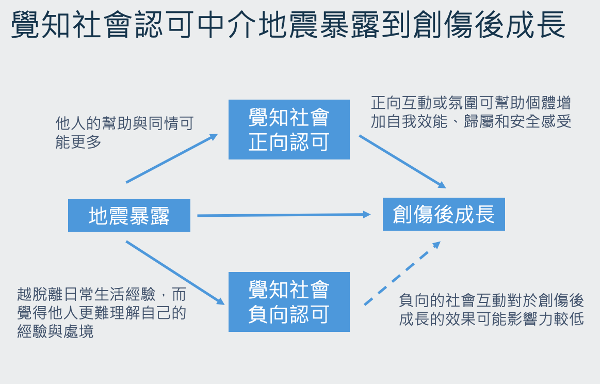
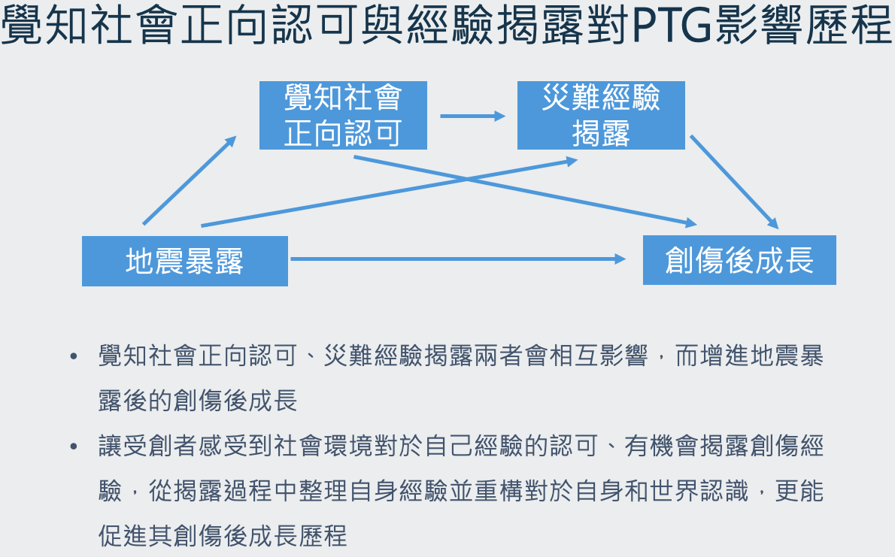

🎓 研究背景與議題發想
- 研究背景
- 碩士就讀期間，適逢九二一地震 20 週年
- 研究室致力於災難心理學的研究，有長年追蹤縱貫性資料
- 議題發想
- 從資料面向發想，將長期縱貫資料發揮最大價值：搜尋過往研究文獻中，能妥善利用長期追蹤資料會使用的研究方法，並檢視目前資料是否可運用該方式
- 從議題特性發想：九二一相較於人為的創傷，受到社會的廣泛關注，因此以受到的覺知社會認可為主軸，去探討身旁他人、整體社會氛圍對於個體適應之影響
🔍 研究問題

- 本論文想要探討九二一居民在經歷地震之後二十年中，創傷後壓力症狀與創傷後成長現象，以及地震暴露、覺知社會認可對其的影響。其中分為兩個子研究
- 第一個研究為縱貫研究，以長期追蹤的 PTSD 症狀為主要研究變項，理解客觀地震暴露、主觀地震威脅對其的影響，以及不同的 PTSD 症狀表現是否有不同的覺知認可程度。
- 第二個研究為橫斷研究，以災後二十年的創傷後成長為主要研究變項，探討地震暴露、覺知社會認可、災難經驗揭露的序列影響歷程。
💡 研究方法

-
縱貫研究將有參與災後兩年和二十年的參與者納入研究；橫斷研究則以參與二十週年追蹤研究的參與者納入研究。
- 研究工具包含：基本資料、地震暴露指標、創傷後壓力反應指標、覺知社會認可量表、災難經驗揭露問卷、加長版創傷後成長量表。
- 統計分析則包含：相關分析、多層次模型分析、潛在類別混合模型分析、Kruskal-Wallis H Test、Process 中介分析、路徑分析等
✏️ 研究結果

- 這個結果顯示客觀地震暴露對於災難初期的 PTSD 可能有較高影響，主觀地震威脅對於長期的 PTSD 有較高影響。
- 在地震後的初期，地震暴露程度高者，也較高程度經歷自身受傷或親友傷亡、房舍倒塌與財產損失等。 面對這些變動，可能會經歷哀悼反應、失去資源的威脅、重建社區而難以休息，導致較多的身心反應。
- 在地震後期，災難本身帶來的受傷、損失可能已經復原，個體也已逐漸適應重建後的生活，此時對於地震的主觀評估，更能反應個體在回憶起此次地震時，感受到對於生命與安全的威脅程度，這些關於創傷事件的負向詮釋可能造成更長期的身心影響

-
創傷後壓力症狀的變化與假設一致：隨著時間，整體居民的創傷後壓力症狀會逐漸減輕；大部分的居民能一直維持在無至低程度的症狀，部分居民隨著時間症狀逐漸舒緩，少部分居民症狀會維持甚至上升。
-
依照 PTSD 的軌跡組別，探討可能有的覺知社會認可差異，在覺知社會正向認可方面沒有顯著差異；在覺知社會負向認可方面，症狀維持組與症狀上升組分數顯著大於無症狀組。

- 隨著地震暴露的程度增加，個體對於正負向覺知社會認可的感受都有更高的趨勢，而正向認可可以增進地震暴露轉化成創傷後成長的程度 。
- 受到地震影響越大時，他人的幫助與同情也可能更多，因而增進覺知社會正向認可，但同時也有可能因受到地震影響大、越脫離日常生活經驗，而覺得他人更難理解自己的經驗與處境。
- 覺知社會正向認可所帶來的正向互動或社會氛圍，可以幫助個體增進自我效能、歸屬與安全感受，進而促進創傷後成長歷程
- 覺知社會負向認可沒有效果，可呼應過往研究指出的：負向的社會互動對於創傷後成長的效果不如正向關係來得有影響力

- 對應 Tedeschi 與 Calhoun 的理論，透過揭露整理對自己和世界有更多的理解和認識，並重建更適切的認知基模，是創傷後成長的重點之一。
- 雖然災難經驗揭露後感受到的社會認可與創傷後成長有關聯，但讓受創者感受到社會環境對於自己經驗的認可、有機會揭露創傷經驗，從揭露過程中整理自身經驗並重構對於自身和世界認識，可能更能促進其創傷後成長歷程。